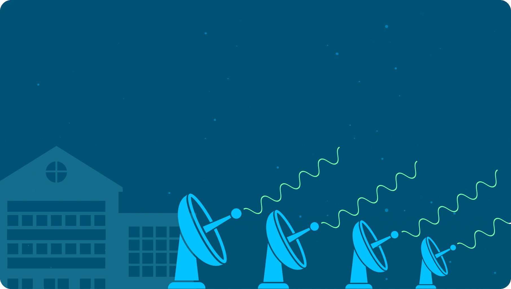
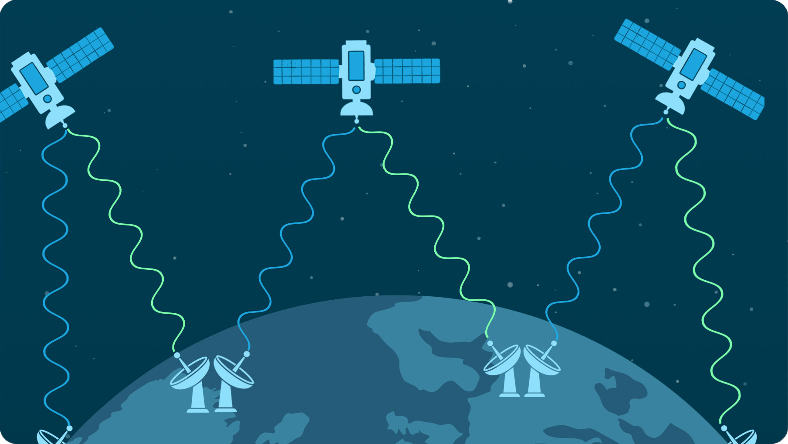
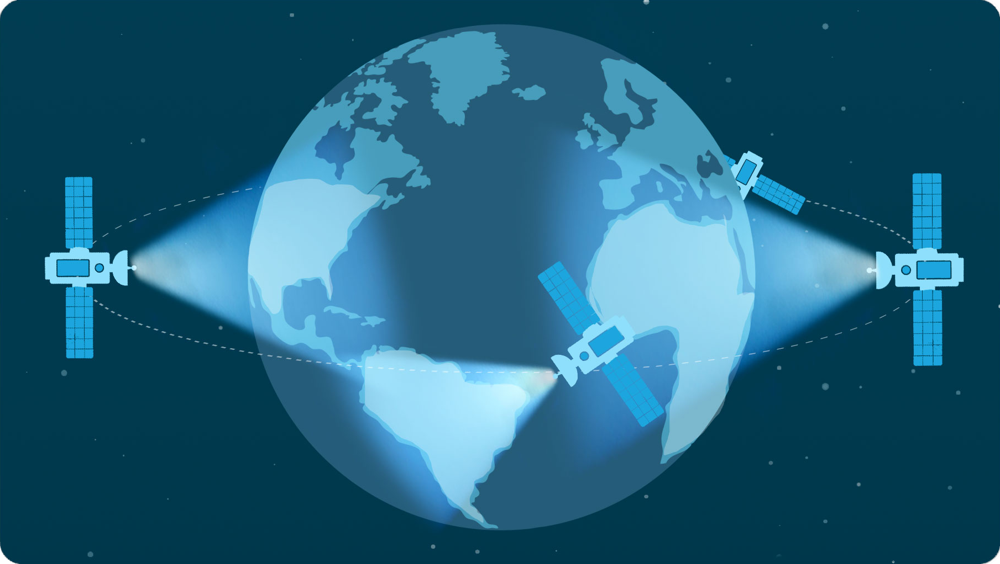

The Teleport Build Process
BlockTeam Teleports are still early in development phases.
Join our mailing list to be notified of any updates.
BlockStream Satellites
What are Blockstream Satellites?
How do BlockTeam Teleports use them?

Geosynchronous satellites receive the signal from teleport's and broadcast it across a wide portion of the Earth.
Click Me

Blockstream Satellite's receive blocks from the teleports throughout the world, to ensure the teleports themselves do not become partitioned.
Click Me

The entire satellite network forms a ring around the planet to ensure the bitcoin network is stable throughout the world.
Click Me